抽象的な要件は、認識齟齬を生む
会議で出た要件は、議事録の段階で曖昧になる。プロトタイプが上がってくる頃には、関係者の解釈はバラバラ。動くもので合意するまでに、数日〜1 週間が溶ける。
Open CoDesign · Local-first AI Design Engine · Issue № 04/28
クラウド設計 AI は速い。だが、未公開のプロダクト情報が「ブラックボックス」に吸い込まれる構造は、本当に許容できるのか——。Open CoDesign は 「Your prompts. Your model. Your laptop.」 を掲げ、設計の主導権をローカル環境に奪還するオープンソース。AI を「実ファイルを出力する設計エンジン」として IDE 的に使う、新しい開発標準を提示する。
BYOK + ChatGPT Plus / Codex OAuth / Sandbox iframe / HTML・PPTX・PDF・ZIP・Markdown 出力 / Comment Mode + AI Sliders / Local SQLite / DESIGN.md 共有メモリ。

これまでの設計 AI は、必ずどこかで妥協を強いた。Bolt.new / Lovable がフルスタック生成を担う一方で、最上流の「設計とドキュメンテーション」はクラウド依存のまま放置されていた。Open CoDesign は、そのレイヤーをローカルファーストで埋める初の OSS である。
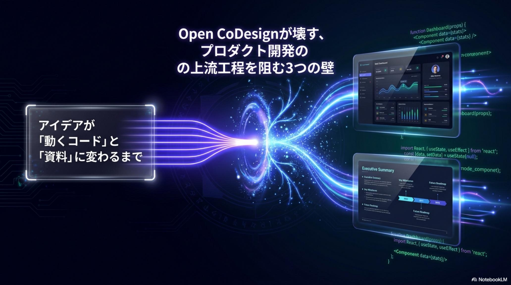
プロダクト開発は、4 つの異なる立場の人間が連携して初めて前進する。だが従来のクラウド設計 AI は、それぞれに別々の「痛み」を残してきた。Open CoDesign が解こうとしているのは、その全員の痛みを同時に癒やすという課題だ。
会議で出た要件は、議事録の段階で曖昧になる。プロトタイプが上がってくる頃には、関係者の解釈はバラバラ。動くもので合意するまでに、数日〜1 週間が溶ける。
Figma で美しく仕上がった画面が、コードに落とすと設計意図がほどけてしまう。コンポーネント分割もスタイル系も、ゼロから組み直し。叩き台が「絵」ではなく「コード」で来てほしいのが本音だ。
顧客ごとに少しずつ違うスライド、LP、価格表を毎回ゼロから作り直す。本来やるべき顧客対応の時間が、資料の初稿づくりで削られていく。
設計 AI に未発表の製品名・仕様・スクリーンショットを投入する瞬間、それは外部送信になっている。社内ガバナンスを通せないツールを、現場が黙認している状態は持続しない。
Open CoDesign の発想は、クラウド設計 AI と一見似ているが、入出力のすべてをローカルに閉じる点で根本的に違う。データもセッション履歴も、ローカル SQLite に保存される。AI への問い合わせだけが、ユーザー指定のプロバイダ（または Ollama）に向かう。
特筆すべきは ChatGPT Plus / Codex の OAuth サポート（v0.1.4）だ。すでに支払っている Web サブスクリプション予算をそのまま流用でき、組織の API 課金管理から「Bring Your Own Budget」へ自然に移行できる。Anthropic / OpenAI / Google / DeepSeek / Ollama を切り替えるたびに新しい契約を結ぶ必要はない。
Open CoDesign は、AI を「会話相手」ではなく「設計エンジン」として扱うために、4 つのコンポーネントを組み合わせている。BYOK でモデルを選び、サンドボックス iframe で生成物を即時実行検証し、マルチエクスポートで納品形式を分け、Comment Mode + AI Sliders で局所修正のコストを潰す。
生成された UI は、iframe 内で React 18 + Babel を使って即実行される。ホスト環境を汚さずに、ホバー・タブ・レスポンシブ動作までその場で検証可能だ。仕上がった成果物は、HTML（インライン CSS） / PPTX / PDF / ZIP / Markdown へオンデバイス出力。エンジニア向け納品物と経営向けプレゼンが、同じプロセスから生まれる。
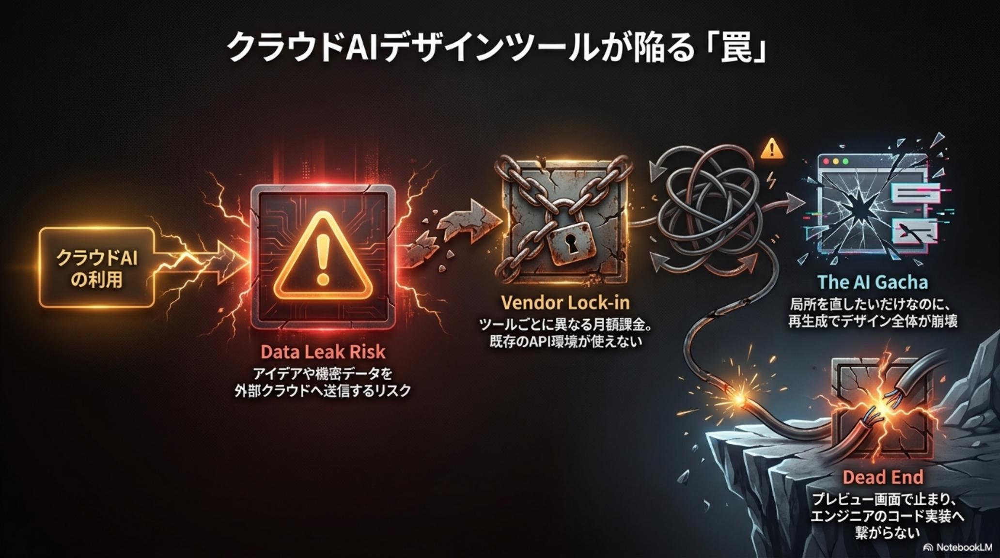
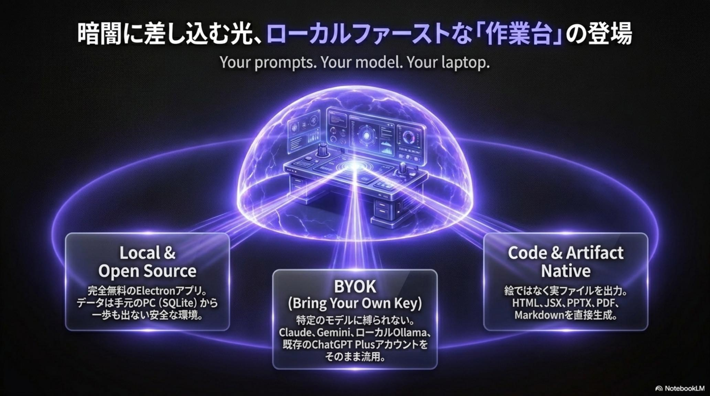
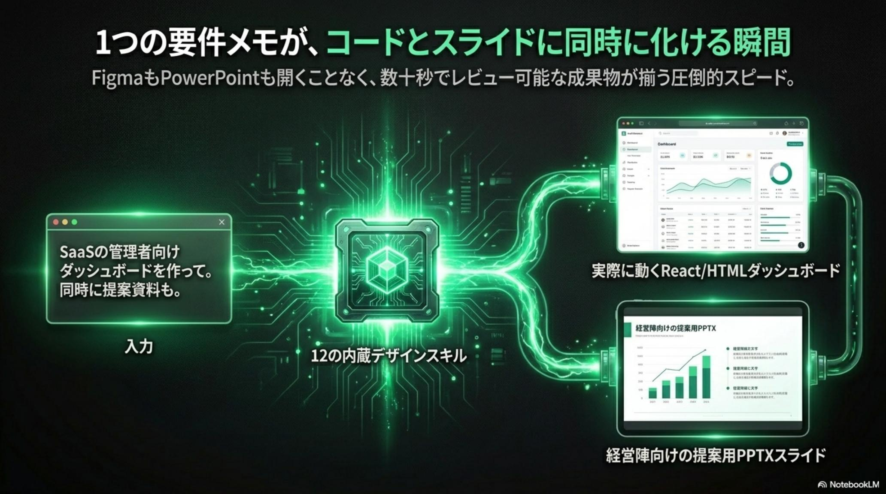
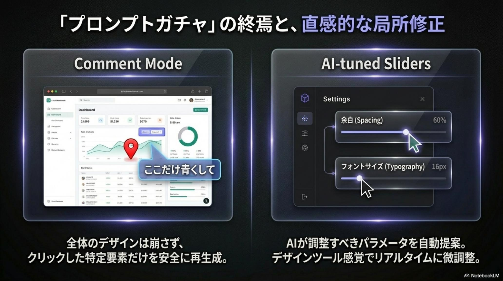
Open CoDesign は、Bolt.new や Lovable と競合しない。彼らがフルスタックの「動くアプリ生成」に強いのに対し、Open CoDesign はその手前の「設計＋ドキュメンテーション」に絞り込んだ。だからこそ、PM と営業と SecOps が同じツールを正当化できる。
すべてのデザイン履歴と設定はローカル SQLite に保存される。データの外部送信は、ユーザーが指定したモデルプロバイダとの通信に限定される。これが「データ主権の確保」の意味するところだ。さらに高額な SaaS サブスクリプションを排除し、既存の API キーや ChatGPT Plus アカウントを再利用する Bring Your Own Budget モデルを確立した。
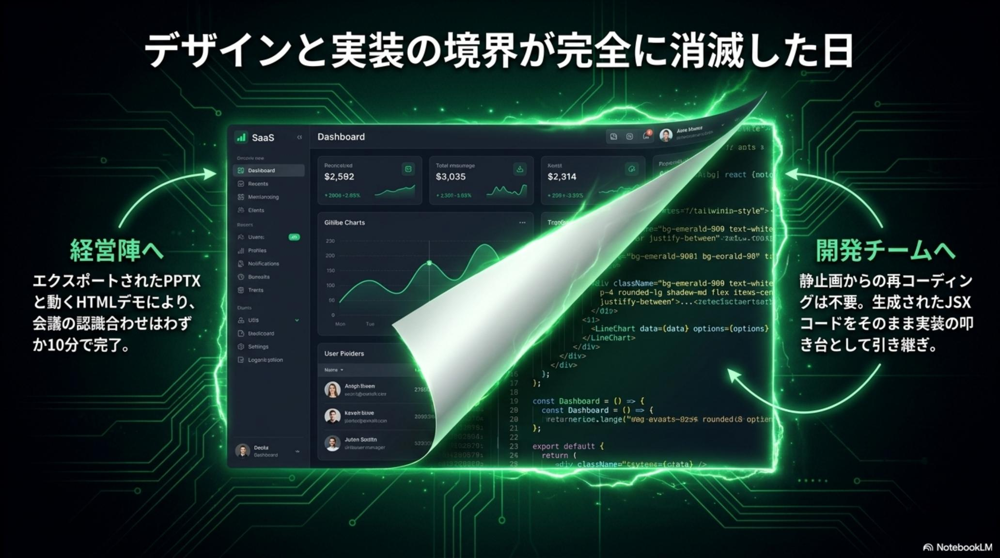
アーキテクトのセキュリティノート：v0.1.4 のインストーラーは未署名で、macOS では xattr -cr "/Applications/Open CoDesign.app" による属性削除が必要だ。鍵管理は config.toml に mode 0600 で保存される実質プレーンテキスト。高セキュリティ環境では Ollama 利用、または利用上限を絞った専用 API キー運用を推奨する。OSS だからこそ、運用責任の所在が明確になる。
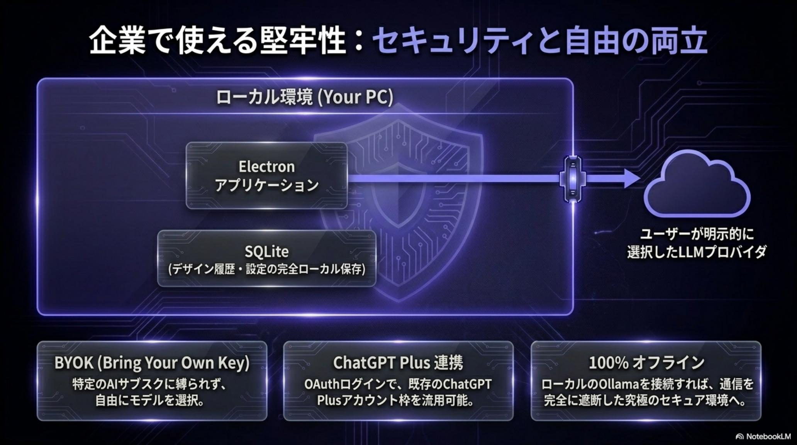
クイック・インストールは 3 分。Homebrew / winget で導入し、既存の Claude Code や Cursor の設定をワンクリックでインポートできる。あとは 12 の Design Skill Modules を引き出す構造化プロンプトを送るだけだ。
macOS: brew install --cask opencoworkai/tap/open-codesign
Windows: winget install OpenCoworkAI.OpenCoDesign
既存 IDE 設定をワンクリック取り込み。
Case A：SaaS LP（"Pulse AI" hero / 3-column features / pricing）。
Case B：社内ダッシュボード（"Nova HR" sidebar nav / KPI cards / 折れ線）。
Skill モジュールが自動選択される。
"Make the pricing section more bold" のようなピンポイント指示で AI Sliders と組み合わせて微調整。再プロンプトを最小化する。
GitHub リポジトリ・Obsidian Vault・Notion へ HTML / PPTX / PDF / ZIP / Markdown を直接書き出し。版管理にそのまま乗る。
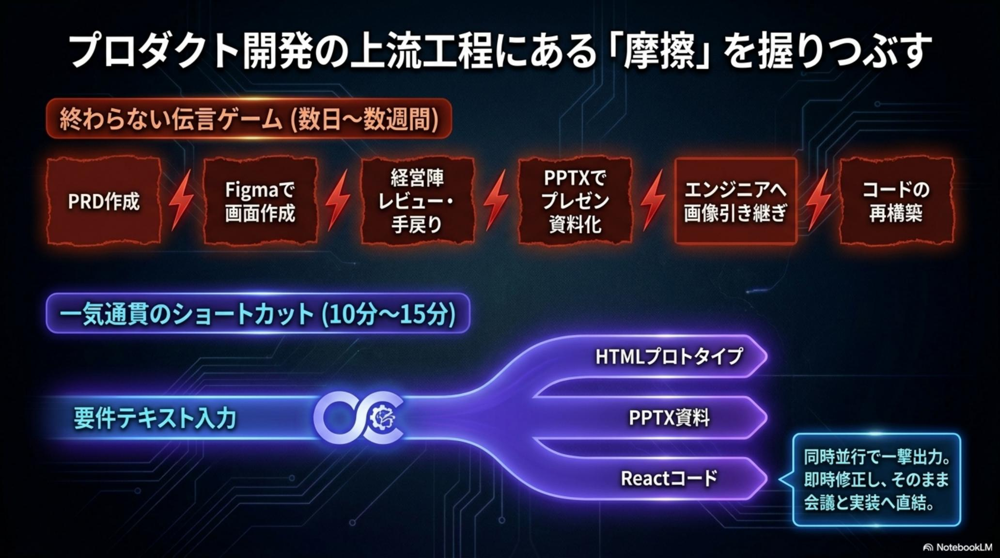
次期 v0.2 で Open CoDesign は、「生成ツール」から「自律型設計エージェント」へ昇華する。鍵は 3 つ——DESIGN.md による共有メモリ、Permissioned Agent Loop による安全な実行委任、Workspace-backed Sessions による Git / Obsidian 統合だ。
ブランドガイドラインやデザインシステムを DESIGN.md に書き出し、人間と AI が同じファイルを編集する。セッションを跨いでも一貫性が保たれる。pi-coding-agent ベースの Permissioned Agent Loop は、ユーザー承認を経て bash 実行とローカルファイル R/W を許可する。各デザインは独立した Workspace フォルダと JSONL 履歴を持ち、Git による版管理と Obsidian の PARA / Zettelkasten 構造に同期する。
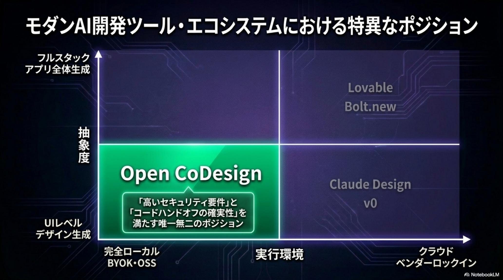
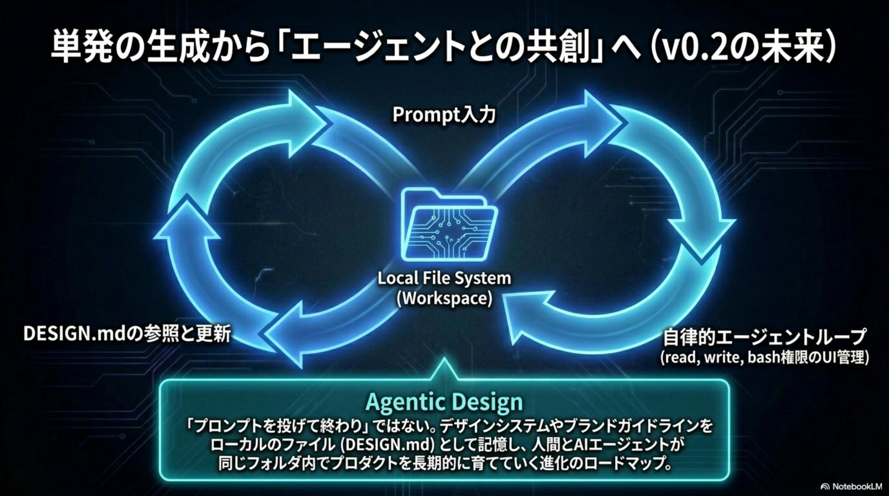
Open CoDesign は単なる「速い AI ツール」ではなく、組織の生産性レイヤーの組み替えだ。立場ごとに最初の一歩は変わる。
会議メモを Open CoDesign に流し込み、10 分で「動く UI」と「ピッチ用 PPTX」を初稿化する。関係者の認識齟齬を、要件定義の段階で潰せる。
デザインの「絵」ではなく、React / HTML / Tailwind コードとして叩き台を受け取る。定型的な画面組みから解放され、本質的なロジック実装に時間を回せる。
BYOK + ローカル SQLite + Ollama 構成で、クラウド AI への情報流出をゼロに抑える。AI 利活用の社内ガイドラインに「Open CoDesign 構成」を加えるところから始める。
プロダクト開発の未来は、あなたのラップトップの中にある。AI を「借りる」から「持つ」へ。— Open CoDesign 公式資料 / OpenCoworkAI
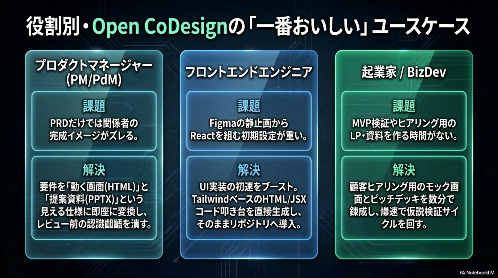
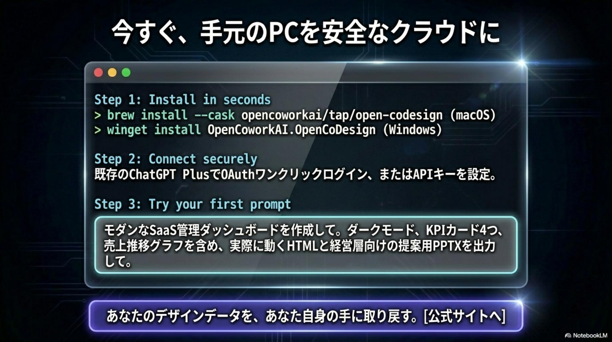